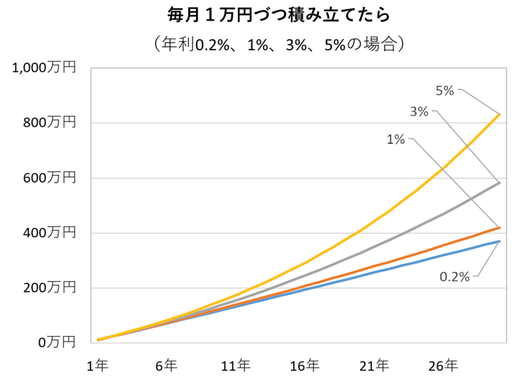
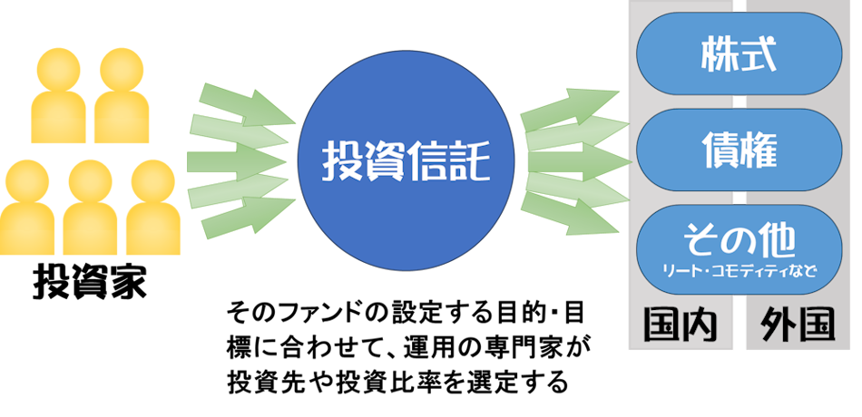

始める前に 制度を知れば、不安が安心に変わる。
お金の準備や資産づくりは、大きな額から始める必要はありません。 少しずつでも続けることで、将来の安心につながります。
資産形成や投資を難しく感じている方も、正しい知識を持って第一歩を踏み出してみましょう。 未来の安心は、今日の小さな一歩から始まります。
資産形成の基本姿勢
まずは「総資産のバランス」を考えることが大切です。 数か月〜1年分の生活費にあたる緊急資金は確保しつつ、 長期で育てたい資金は投資へ振り向けるなど、目的と時期に応じて配分を決めましょう。
投資には短期・中期・長期があり、それぞれに向いた商品があります。 年齢や家族構成、健康状態、仕事などの変化に合わせて、 運用ポリシーを定期的に見直すことも大切です。
| 期間 | 短期 | 中期 | 長期 |
|---|---|---|---|
| 目的 | 日々のお金 | 5年以内に使う予定 | 10年以上使わない |
| 大事なポイント | すぐに使える | 確実に準備できる | 増やせる |
| 貯め方 | 現金・普通預金 | 定期預金 | 投資 |
小額投資のメリット
資産形成というと「まとまったお金が必要」と思いがちですが、毎月1,000円や5,000円からでも始められます。
小額で始めることで家計に負担をかけずに習慣化でき、時間をかけて少しずつ積み立てることで 複利効果により資産が育っていきます。
NISA・iDeCo の制度概要
投資を後押ししてくれる制度として、NISA（少額投資非課税制度） と iDeCo（個人型確定拠出年金） があります。
どちらも運用益の非課税や節税の仕組みがあり、 将来の安心をつくる強い味方です。
NISA の特徴
NISAは、子どもから高齢者まで幅広く利用できる制度です。
対象は投資信託と株式で、いずれも市場の価格変動の影響を受けます。
運用中に得られる利益は非課税で、必要なときに売却して現金化できる自由度も魅力。 教育費や住宅費など将来の出費に備えるのにも活用できます。
iDeCo の特徴
iDeCoは老後資金づくりに特化した制度です。
対象は投資信託や保険で、元本保証型の商品も選べます。 掛金は全額が所得控除の対象で、積み立て時に大きな節税効果があります。
一方で原則60歳まで引き出せない、口座管理などの手数料がかかる、 受け取り時に課税される場合があるなどの制約もあります。 また、会社員・自営業・公務員などの属性によって掛金の上限額が異なるため、自分の立場に合わせた使い方を検討しましょう。
投資信託とは？
NISAやiDeCoで利用できる金融商品の中心が投資信託です。
投資家から集めたお金をひとつにまとめ、運用会社が株式や債券などに分散投資します。 少額からでもプロの運用を活用できるのが魅力です。 銀行や証券会社で購入できますが、金融機関によって取り扱い商品が異なる点に注意が必要です。
NISA と iDeCo の比較
| NISA （少額投資非課税制度） |
iDeCo （個人型確定拠出年金） | |
|---|---|---|
| 目的 | 幅広い資産形成 （生活資金や将来の大きな出費にも対応） |
老後資金の準備に特化 |
| 利用できる年齢 | 制限なし （未成年も可能） |
20歳〜60歳未満 （65歳まで加入延長可） |
| 掛け金（投資額）上限 | つみたて投資枠：年間120万円 成長投資枠：年間240万円 （保有の上限は1800万円） |
職業や加入年金によって 月5000円〜最大68000円 |
| 節税効果 | 運用益が非課税 | 運用益が非課税 掛け金が全額所得控除 |
| 引き出し可能時期 | いつでも可能 | 原則60歳まで引き出せない |
| 受け取り時の税金 | なし | 一時金や年金として受け取る際に課税される場合あり |
| 向いている人 | 途中で使う可能性がある人 幅広く投資をしたい人 |
老後資金を計画的に準備したい人 節税メリットを活かしたい人 |
【注意】
このページの内容は一般的な解説であり、特定の商品勧誘を目的とするものではありません。
各制度の詳細・最新情報は公的機関や金融機関の公式情報をご確認ください。
リスクを知ろう — 貯め方にもリスクがある。だから知って備える。
投資のリスクと貯蓄のリスク
投資というと「値下がりして損をするのでは？」という不安が真っ先に浮かびます。 しかし実は、貯蓄にもリスクがあります。
たとえばインフレが進むと、同じ1万円でも買えるものの量が減り、資産の実質的な価値は下がってしまいます。 つまり、投資にもリスクはあるけれど、貯蓄だけに頼ることもリスクがあるのです。

インフレによる資産価値の減少
近年の物価や為替の変動は、私たちの生活を直撃しました。 日用品や食料品の値上がりを実感した方も多いはずです。 これはつまり、「お金を持っているだけでは、時間が経つほど価値が減ってしまう」ことを示しています。
だからこそ、資産を増やすだけでなく、守るためにも投資の活用が重要です。
分散投資で安心感を高める
投資のリスクを抑えるために有効なのが「分散投資」です。
株式だけでなく、債券や投資信託といった異なる資産に分けて投資することで、値動きの偏りを小さくできます。
例えば、株式と債券は値動きが逆相関の関係にあるといわれています。 株式市場が下がるときに債券が安定することがあり、 その組み合わせによって全体の資産を守る効果が期待できます。
さらに、投資信託では運用会社が市場の状況に応じて銘柄を入れ替えるため、 目指すパフォーマンスに近づける工夫がなされています。
こうした異なる特性を組み合わせることで、資産全体の安定感を高めることができます。 「1つのかごに卵を全部入れない」という考え方を実践しながら、 安心感を持って資産形成を続けていくことが望ましいのです。
自分に合ったリスク許容度を知る
人によって「どのくらいのリスクを取れるか」は異なります。 年齢、家族構成、収入、健康状態など、生活環境によっても変わってきます。
たとえば、若い世代であれば将来までの時間が長く、 もし一時的に資産価値が下がったとしても、時間をかけて回復する可能性があります。 そのため、ある程度のリスクを取る余裕があります。
一方で、リタイアが近い世代では、元本を大きく減らさない工夫が求められます。 生活資金に直結するため、リスクを抑えた資産運用が中心となるでしょう。
自分が「どのくらいの値下がりなら受け入れられるか」を意識することが、安心して投資を続けるための第一歩です。
はじめの一歩 — 今日の小さな行動が、未来の安心をつくる。
小さな目標を立てる
「老後2,000万円」といった大きな目標を前にすると、始める前から気が重くなってしまいます。 大切なのは、まず小さな目標を設定することです。
たとえば「毎月3,000円積み立ててみる」「最初の1万円を運用してみる」 といった小さな行動でも、習慣化することで大きな成果につながります。
また、継続していく中で投資に対する関心を持ち続けることができ、 経済や社会の情報に自然と敏感になっていきます。 これがさらに学びや行動につながり、資産運用のチャンスを広げるきっかけになります。

自分に合った金融機関を選ぶ
投資を始める第一歩は「どこに口座を持つか」を決めることです。 金融機関によって選べる商品やサポート体制が違い、投資のスタイルに大きく関わります。
- 銀行：安心感があり、窓口で相談できるが、取り扱い商品は限定的。
- 証券会社（実店舗型）：担当者と相談しながら選べる安心感があるが、手数料はやや高め。勧誘が苦手な人は注意が必要。
- ネット証券：手数料が安く、豊富な商品を扱う一方、自分で調べて判断する必要がある。
最初の選択が、その後の資産形成の安心感につながります。
今日の一歩が未来を変える
金融機関を選んだら、次は以下の流れで実際に始めましょう。
- 証券口座を開設する
- 積立の金額や商品を設定する
- 定期的に記録・確認して見直す
資産形成は「思い立った日がスタートライン」です。
「まだ早いかな」「もう遅いかな」と迷うより、 今日できる一歩を踏み出すことが未来の安心につながります。
続ける力が未来を変えていく、その第一歩を自分で決めてみましょう。